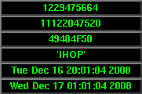

Apologies for calendar spottiness. Crummy term papers are finally in, and we now return you to your regularly scheduled programming.
DynaLoader makes the use of giant C libraries like the POSIX module a lot less hairy by only loading those functions you use/request, as opposed to only exposing those you request as is the case with a traditional import. That's interesting and all, but XS is so arcane. What about us mortals?
After reading Friday's entry, I thought to myself that there ought to be some simple way of consolidating the examples into a single script that wouldn't load unnecessary code. At this point I rediscovered SelfLoader, a pure perl analog to DynaLoader. SelfLoader provides deferred compilation (and some of the potential pitfalls that entails) of rarely used code and is ideal for large libraries; where, it seems to this author, it is unfortunately underused. This magic is achieved through AUTOLOAD and string eval, meaning we are also able to defer dependencies with no extra effort if they are used where needed e.g; lines 65 & 74. An additional feature—of debatable merit some would argue—when using SelfLoader to provide for minimal loading and export of a library's functions is that because it uses AUTOLOAD, one needn't bother with potentially long and cumbersome import lists.
A few other adjustments, and this single script is ready for primetime on both barebones servers and decked-out desktops alike.

time_t: 1229475664
oct: 11122047520
hex: 49484F50
ascii: 'IHOP'
local: Tue Dec 16 20:01:04 2008
zulu: Wed Dec 17 01:01:04 2008
1 #! perl -ls 2 ### Purpose - Find Words that are time_t's or vice versa 3 use vars qw{$x $geometry}; 4 use SelfLoader; 5 6 ## just do it 7 if( $x ){ 8 eval "use Tk"; 9 $geometry ||= '+0+0'; 10 GUI(); 11 } 12 else{ 13 my $fmt = "%stime_t: %i\n oct: %s\n hex: %s\n ascii: %s\n local: %s\n zulu: %s\n"; 14 15 if (@ARGV) { 16 ## simulate 17 printf $fmt, '', it( bytes_to_nums(shift) ) while @ARGV; 18 } 19 else{ 20 my $cls = CLI(); 21 printf $fmt, $cls, it( time() ) while ( sleep(1) ) 22 } 23 } 24 25 26 sub bytes_to_nums { 27 my $string = shift; 28 ## Probably has problems if given more than 4 chars? 29 my $long = unpack( "N*", pack( "a*", $string ) ); 30 return $long; 31 } 32 33 sub nums_to_bytes { 34 my $long = shift; 35 ## Probably has problems if given more than 4 chars? 36 my $string = unpack( "a*", pack( "N*", $long ) ); 37 return $string; 38 } 39 40 sub it { 41 my @Bufs; 42 my $t = shift; 43 44 push @Bufs, scalar($t); 45 push @Bufs, scalar( sprintf "%o", $t ); 46 push @Bufs, scalar( sprintf "%X", $t ); # require 5.010; my $_ = 47 push @Bufs, 48 scalar 49 do { local $_ = nums_to_bytes($t); s/[^[:print:]]/chr 0x3F/ge; "'$_'"; }; 50 push @Bufs, scalar localtime($t); 51 push @Bufs, scalar gmtime($t); 52 53 return wantarray ? @Bufs : \@Bufs; 54 } 55 56 57 __DATA__ 58 sub CLI{ 59 my $cls; 60 # from FAQ http://perldoc.perl.org/perlfaq8.html#How-do-I-clear-the-screen%3F 61 if ( $^O =~ /MSWin/ ) { 62 $cls = ""; 63 } 64 else { 65 use Term::Cap; 66 my $terminal = Term::Cap->Tgetent( { OSPEED => 9600 } ); 67 my $clear_string = $terminal->Tputs('cl'); 68 $cls = $clear_string; 69 } 70 return $cls; 71 } 72 73 sub GUI{ 74 use Tk; 75 # based on Tk/demos/timer 76 77 my $MW = MainWindow->new; 78 79 $MW->overrideredirect(1); 80 $MW->geometry($geometry); 81 82 $MW->bind( '<Control-c>' => \&exit ); 83 $MW->bind( '<Control-q>' => \&exit ); 84 85 # %tinfo: the Timer Information hash. 86 # Key Contents 87 # w Reference to MainWindow. 88 # p 1 IIF paused. 89 # t0..t9 Value of -textvariables 90 my (%tinfo) = ( 'w' => $MW, 'p' => 0, ); 91 92 my $lines = scalar @{ [ it( time() ) ] }; 93 my @lines = map { 94 $MW->Label( 95 -relief => 'raised', 96 -width => 25, 97 -textvariable => \$tinfo{ 't' . $_ }, 98 -foreground => 'green', 99 -background=>'black', 100 ); 101 } 0 .. ( $lines - 1 ); 102 $_->pack() for @lines; 103 104 105 sub tick { 106 # Update the counter every 50 milliseconds, or 5 hundredths of a second. 107 108 return if $tinfo{'p'}; 109 my @ry = scalar(@ARGV) ? bytes_to_nums($ARGV[0]) : time; 110 @tinfo{ 't0' .. "t$lines" } = it( @ry ); 111 $tinfo{'w'}->after( 50, \&tick ); 112 } 113 114 $tinfo{'w'}->after( 100, \&tick ); 115 MainLoop; 116 117 exit; 118 } 119 120 __END__ 121 122 =pod 123 124 =head1 NAME 125 126 time_t2X - display time_t in a variety of formats 127 128 =head1 SYNOPSIS 129 130 time_t2X [B<-x>] [B<-geometry>=I<geometry>] [I<word>] 131 132 =head1 DESCRIPTION 133 134 Display a live clock, or the time(s) corresponding to 4-character string(s) 135 provided on the command line. 136 137 =head1 OPTIONS 138 139 =over 140 141 =item -x 142 143 Graphical display 144 145 =item -geometry 146 147 Geometry of graphical display 148 149 =back 150 151 =head1 AUTHORS 152 153 Bill 'N1VUX' Ricker, with alterations by Jerrad Pierce 154 155 =end